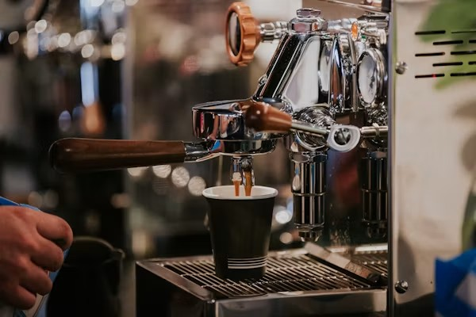

01ESPRESSO
Espresso Machine
Create café-quality espresso shots at home with a compact stainless-steel machine featuring a powerful steam wand and temperature control.
Usage Tip
Use freshly ground beans and preheat your portafilter for
better flavour and creamy crema.
$499.00